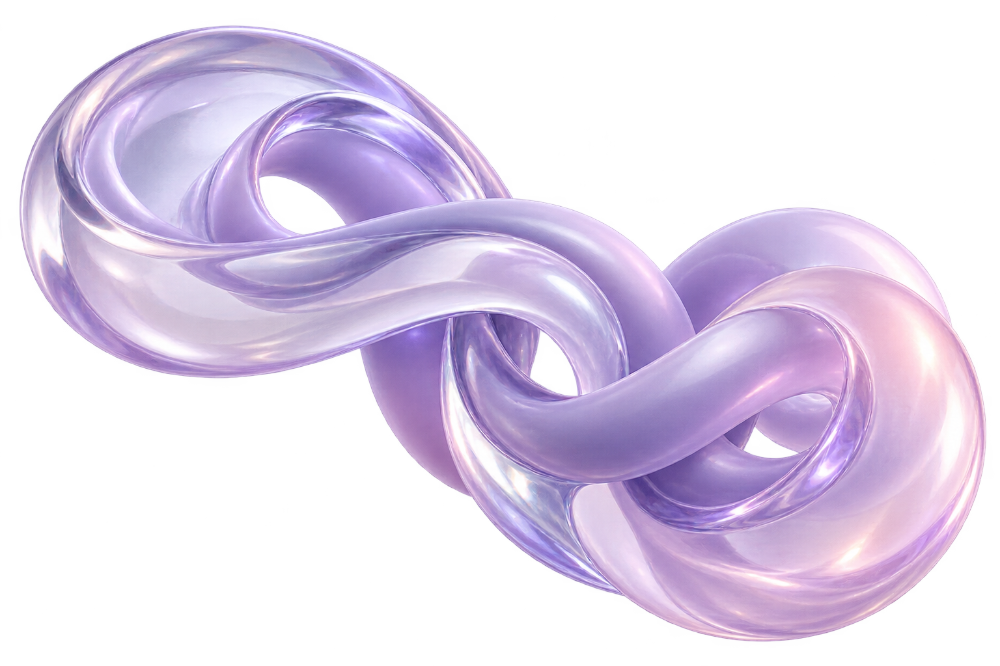

Imagination
meets craft
Studio
What we do
Ideas, not noise
Say hey!
Let’s team up!
bring us your idea*

Visions So
UNDENIABLE
So
RESIST
SELECTED STUDIES / 2025
Studio
What we do
Ideas, not noise
Say hey!

RESIST